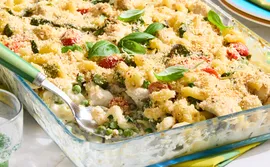

Chicken Primavera Pasta Bake

This chicken primavera pasta bake is full of fresh spring peas. asparagus, and spinach. With cavatappi pasta in a
creamy cheese sauce, the casserole is topped with seasoned panko and Parmesan and bakes until bubbly and golden.
Ingredients
- 1 ½ pounds dried cavatappi pasta
- 4 cups fresh or frozen peas
- 2 pounds asparagus, trimmed and coarsely chopped
- 4 tablespoons olive oil, divided
- 3 pounds skinless, boneless chicken breast cut into 1-inch pieces
- 2 teaspoons salt, divided
- 1 ½ teaspoons freshly ground black pepper, divided
- ½ cup butter
- ½ cup all-purpose flour
- 4 cups milk
- 2 (8 ounce) package cream cheese, softened
- 1 ½ cups reduced-sodium chicken broth
- 4 cups coarsely chopped spinach
- 2 cups cherry tomatoes, halved
- 2 cups grated Parmesan cheese, divided
2 tablespoons chopped fresh basilor 1 teaspoon dried basil, - crushed
2 tablespoons chopped fresh oregano,or 1 teaspoon dried oregano, - crushed
- 1 ⅓ cups seasoned panko breadcrumbs
Steps of Cooking